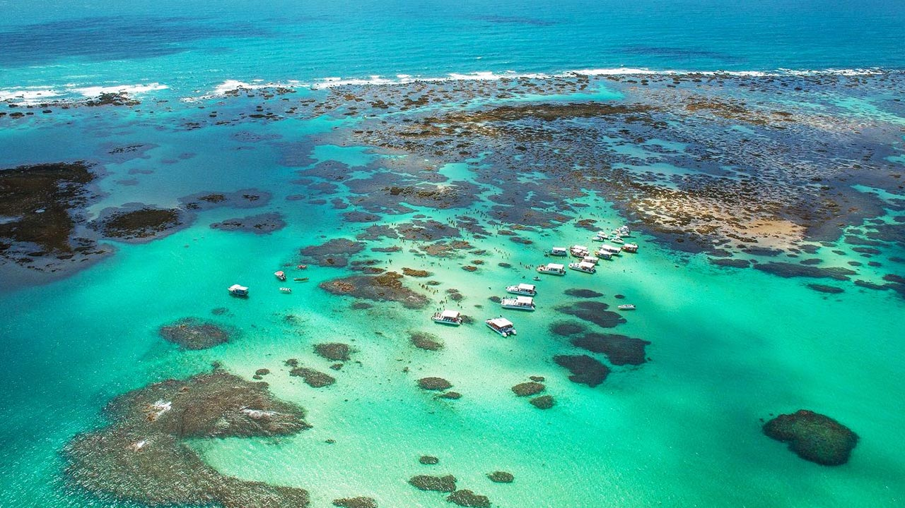

Descubra sua próxima viagem!
23 de maio, 2023

28 de maio, 2023

Foz do Iguaçu
Foz do Iguaçu, cidade no estado brasileiro do Paraná. Visite as famosas Cataratas do Iguaçu, uma das maiores cachoeiras do mundo.
23 de maio, 2023
Porto de Galinhas
Porto de Galinhas está localizada em Pernambuco, no município de Ipujoca. É um dos principais destinos de praia do nordeste brasileiro.
5 comentários
23 de maio, 2023
23 de maio, 2023
Praia de Pipa
A Praia de Pipa é um dos maiores paraísos do Rio Grande do Norte. Com praias lindas, centrinho agitado e bons restaurantes, ela é um dos lugares mais requisitados do Nordeste.
5 comentários
O que é o PlaceXP?
O PlaceXP consiste em um website voltado ao turismo, permitindo a criação e divulgação do seu blog sobre suas viagens e experiências com certo lugar. A partir disso, o site organiza uma coletânea de blogs sobre viagens, auxiliando os visitantes em suas dúvidas e inspirações!
Como funciona?
Dentro da Barra de pesquisa localizada na parte superior do site, digite o destino que você deseja conhecer ou utilize os cards localizados na home. Com isso, você terá acesso a blogs e comentários falando sobre a experiência em cada local
5 comentários